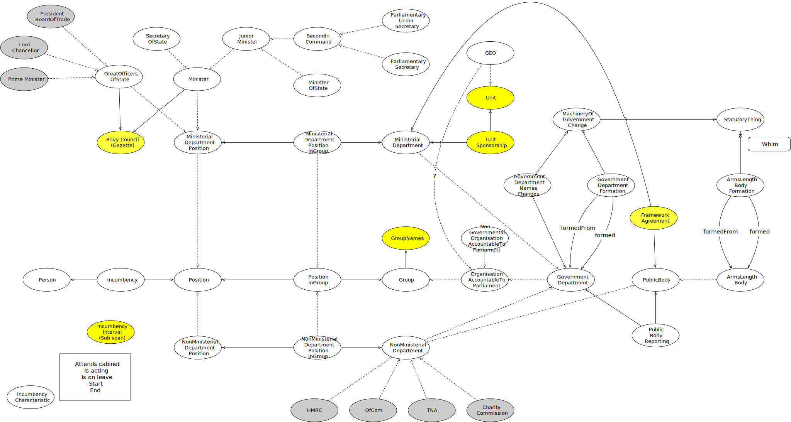

IRI: http://parliament.uk/ontologies/organisation-accountable-to-parliament/GovernmentBody
IRI: http://parliament.uk/ontologies/organisation-accountable-to-parliament/GovernmentDepartment
IRI: http://parliament.uk/ontologies/organisation-accountable-to-parliament/Group
IRI: http://parliament.uk/ontologies/organisation-accountable-to-parliament/MinisterialDepartment
IRI: http://parliament.uk/ontologies/organisation-accountable-to-parliament/NonMinisterialDepartment
IRI: http://parliament.uk/ontologies/organisation-accountable-to-parliament/OrganisationAccountableToParliament
IRI: http://parliament.uk/ontologies/organisation-accountable-to-parliament/PublicBody
This HTML document was obtained by processing the OWL ontology source code through LODE, Live OWL Documentation Environment, developed by Silvio Peroni.